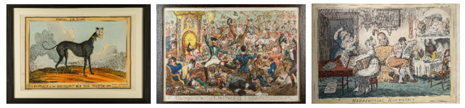

Ink & Outrage: 18th-Century Satirical Prints in London & Dublin
Ink & Outrage: 18th-Century Satirical Prints in London & Dublin is a lively and revelatory exhibition that explores the golden age of caricature and the networks of art, politics, and piracy that connected Britain and Ireland.
The exhibition examines how artists such as James Gillray, Thomas Rowlandson, and Isaac Cruikshank used humor and exaggeration to lampoon the great and powerful—giving rise to one of the most distinctive visual languages of dissent in Western art. It also highlights how, exploiting a legal loophole in British copyright law, Dublin publishers pirated London satires, creating their own inventive and often subversive versions. These Irish “copies,” far from derivative, reveal an independent wit and political perspective that captured the pulse of a nation on the edge of revolution and reform.
Major support for Ink & Outrage: 18th-Century Satirical Prints in London & Dublin is provided by the Driehaus Trust Company, LLC., Karen Z. Gray-Krehbiel and John H. Krehbiel Jr., and the Irish Georgian Society.
Generous support is provided by Joyce and Bill Gordon, Ellen O’Connor and Friends of Ink & Outrage.